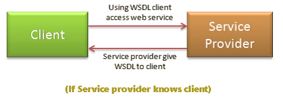
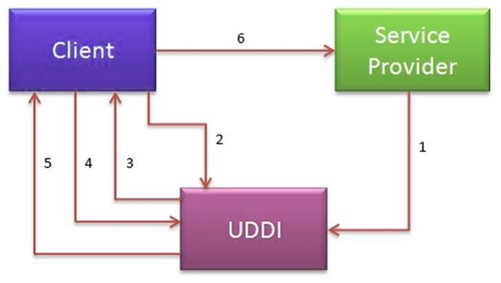
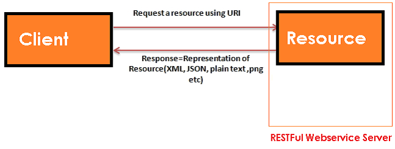
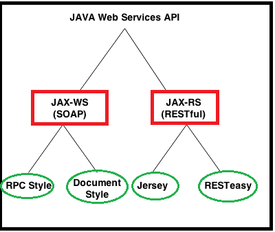
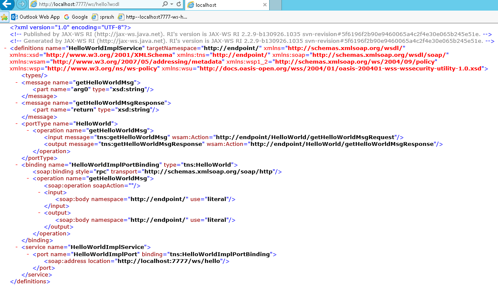
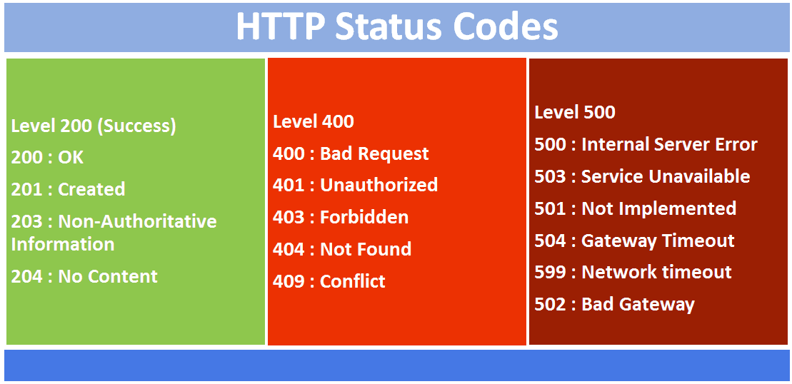

Web services
How to access SOAP web service?
There are two ways to access web service
1. If Service provider knows client
If Service provider knows client, then it will provide its wsdl to client and client will be able to access web service.

2. If Service provider register its WSDL to UDDI and client can access it from UDDI
UDDI:UDDI stands for Universal Description, Discovery and Integration. It is a directory service. Web services can register with a UDDI and make themselves available through it for discovery.So following steps are involved.
1. Service provider registers with UDDI.
2. Client searches for service in UDDI.
3. UDDI returns all service providers offering that service.
4. Client chooses service provider
5. UDDI returns WSDL of chosen service provider.
6. Using WSDL of service provider, client accesses web service

What are Rest components
It consists of two components
-
REST server: which provides access to the resources
-
REST client : which accesses and modify the REST resources.

What is Idempotent?
Idempotent means result of multiple successful request will not change state of resource after initial application
For example:
GET is idempotent. If Delete() is idempotent method because when you first time use delete, it will delete the resource (initial application) but after that, all other request will have no result because resource is already deleted.
Post is not idempotent method because when you use post to create resource, it will keep creating resource for each new request, so result of multiple successful request will not be same.
Webservices API in java?

JAX-WS Encoding Styles?
There are two encoding use models that are used to translate a WSDL binding to a SOAP message. They are: literal, and encoded.
The combination of the different style and use models give us four different ways to translate a WSDL binding to a SOAP message.
Document/literal
Document/encoded
RPC/literal
RPC/encoded
When using a literal use model, the body contents should conform to a user-defined XML-schema (XSD) structure. The advantage is two-fold.
-
one, you can validate the message body with the user-defined XML-schema.
-
Two, you can also transform the message using a transformation language like XSLT.
With a (SOAP) encoded use model, the message has to use XSD datatypes, but the structure of the message need not conform to any user-defined XML schema. This makes it difficult to validate the message body or use XSLT based transformations on the message body.
Diffrence between RPC-Style and Document Style
The way of generating SOAP message format is main difference between them.
1. RPC Stlye:
SOAP Body must conform to a structure that indicates the method name & Parameters name
<soap:envelope>
<soap:body>
<myMethod>
<x xsi:type="xsd:int">5</x>
<y xsi:type="xsd:float">5.0</y>
</myMethod>
</soap:body>
</soap:envelope>
2. Document Style
SOAP Body can be structured in any way you like. There is no TYPE attribute here
<soap:envelope>
<soap:body>
<xElement>5</xElement>
<yElement>5.0</yElement>
</soap:body>
</soap:envelope>
Steps to create JAX-WS Webservice
1. JAX-WS Web Service End Point files
-
Create a Web Service Endpoint Interface with @SOAPBinding(style = Style.RPC)
-
Create a Web Service Endpoint Implementation
-
Create an Endpoint Publisher
-
Test generated WSDL. Ex: http://localhost:8080/ws/hello?wsdl
2. Web Service Client files
1.Java Web Service Client
1. Create a Web Service Endpoint Interface
package endpoint;
import javax.jws.WebMethod;
import javax.jws.WebService;
import javax.jws.soap.SOAPBinding;
import javax.jws.soap.SOAPBinding.Style;
//Service Endpoint Interface
@WebService
@SOAPBinding(style = Style.RPC)
public interface HelloWorld{
@WebMethod
String getHelloWorldMsg(String msg);
}
2. Create a Web Service Endpoint Implementation
package endpoint;
import javax.jws.WebService;
//Service Implementation
@WebService(endpointInterface = "endpoint.HelloWorld")
public class HelloWorldImpl implements HelloWorld{
@Override
public String getHelloWorldMsg(String msg) {
// TODO Auto-generated method stub
return "Your Message from WebService is : "+msg;
}
}
3. Create an Endpoint Publisher
package endpoint;
import javax.xml.ws.Endpoint;
//Endpoint publisher
public class HelloWorldPublisher{
public static void main(String[] args) {
Endpoint.publish("http://localhost:7777/ws/hello", new HelloWorldImpl());
System.out.println("WSDL Published !!");
}
}
4. Test generated WSDL
Run HelloWorldPublisher as Java Application & access url: http://localhost:7777/ws/hello?wsdl

http://endpoint/” uses package name of Service endpoint publisher
wsimport tool VS wsgen
1.wsimport –(WSDL Import) tool is will import WSDL file and generates JAX-WS Web Service End Point files.
> wsimport -keep http://localhost:7777/ws/hello?wsdl
2.wsGen –(WSDL Generator)
It will read the JAX-WS Web Service End Point files & Generates WSDL Document & Webservice client for Testing . This wsgen tool is available in $JDK/bin folder
>wsgen -verbose -keep -cp . endpoint.RandomNumber
Difference between JAX-RS & RESTful
-
RESTFul is a Generalized Web service Standard given by W3.ORG.
-
JAX-RS is a specification for RESTful Web Services with Java and it is given by Sun.
-
Jersey from Oracle, *Resteasy *from Jboss are the implementations of JAX-RS
majorly used annotations in RESTFul webservices
-
@Path(‘Path‘)
-
@GET
-
@POST
-
@PUT
-
@DELETE
-
@Produces(MediaType.TEXT_PLAIN [, more-types]) – Only for @GET
-
@Consumes(type[, more-types]) - Only for @POST
-
@PathParam()
-
@QueryParam()
-
@MatrixParam()
-
@FormParam()
Steps to creates to RestFul web-service in java?
1 Add Jersey jar files in pom.xml
2. Create RESTFul webservice at Server End.
@Path("/hellojersey")
public class HelloWorldWebService {
// This method is called if HTML and XML is not requested
@GET
@Produces(MediaType.TEXT_PLAIN)
public String sayPlainTextHello() {
return "Hello Jersey Plain";
}
// This method is called if HTML is requested
@GET
@Produces(MediaType.TEXT_HTML)
public String sayHtmlHello() {
return "<h1>" + "Hello Jersey HTML" + "</h1>";
}
}
3.Configure web.xml
In web.xml, register -com.sun.jersey.spi.container.servlet.ServletContainer-, and puts your Jersey service folder under -init-param-, -com.sun.jersey.config.property.packages
<web-app>
<servlet>
<servlet-name>jersey-serlvet</servlet-name>
<servlet-class>
com.sun.jersey.spi.container.servlet.ServletContainer
</servlet-class>
<init-param>
<param-name>com.sun.jersey.config.property.packages</param-name>
<param-value>service</param-value>
</init-param>
<load-on-startup>1</load-on-startup>
</servlet>
<servlet-mapping>
<servlet-name>jersey-serlvet</servlet-name>
<url-pattern>/rest/*</url-pattern>
</servlet-mapping>
</web-app>
4.Test Service
http://localhost:8080/JAXRS-Jersey-HelloWorld/rest/hellojersey
or
System.out.println(target.path("rest").path("hellojersey").request().accept(MediaType.TEXT_PLAIN).get(String.class));
System.out.println(target.path("rest").path("hellojersey").request().accept(MediaType.TEXT_HTML).get(String.class));
}
Response Class in JAX-RS
javax.ws.rs.core.Response contains static methods to create a Response instance using a ResponseBuilder.
http://localhost:8080/App/rest/students/101/Satya/Vijayawada
@Path("/students")
public class PathParamService {
@GET
@Path("{rollno}/{name}/{address}")
@Produces("text/html")
public Response getResultByPassingValue(
@PathParam("rollno") String rollno,
@PathParam("name") String name,
@PathParam("address") String address) {
String output = "<h1>PathParamService Example</h1>";
output = output+"<br>Roll No : "+rollno;
output = output+"<br>Name : "+name;
output = output+"<br>Address : "+address;
return Response.status(200).entity(output).build();
}
}
How to set different status code in HTTP response?
For setting HTTP status code other than 200, we have to use javax.ws.rs.core.Response class for response. Below are some of the sample return statements showing it’s usage.
return Response.status(422).entity(exception).build();
return Response.ok(response).build(); //200

http://localhost:8080/App/rest/students?rollno=1218&name=SATYA &address=VIJAYAWADA
@Path("/students")
public class QueryParamwithDefaultvalueService {
@GET
@Produces("text/html")
public Response getResultByPassingValue(
@DefaultValue("1000") @QueryParam("rollno") String rollno,
@DefaultValue("XXXX") @QueryParam("name") String name,
@DefaultValue("XXXX") @QueryParam("address") String address) {
String output = "<h1>QueryParamwithDefaultvalueService Example</h1>";
output = output + "<br>Roll No : " + rollno;
output = output + "<br>Name : " + name;
output = output + "<br>Address : " + address;
return Response.status(200).entity(output).build();
}
}
http://localhost:8080/App/rest/students;rollno=1118;name=SATYA;address=VIJAYAWADA
@Path("/students")
public class MatrixParamService{
@GET
@Produces("text/html")
public Response getResultByPassingValue(
@MatrixParam("rollno") String rollno,
@MatrixParam("name") String name,
@MatrixParam("address") String address) {
String output = "<h1>@MatrixParam Example</h1>";
output = output+"<br>Roll No : "+rollno;
output = output+"<br>Name : "+name;
output = output+"<br>Address : "+address;
return Response.status(200).entity(output).build();
}
}

@Path("/students")
public class FormParamService {
@POST
@Path("/registerStudent")
@Produces("text/html")
public Response getResultByPassingValue(
@FormParam("rollno") String rollno,
@FormParam("name") String name,
@FormParam("address") String address) {
String output = "<h1>@FormParam Example - REGISTRATION COMPLETED!!!</h1>";
output = output+"<br>Roll No : "+rollno;
output = output+"<br>Name : "+name;
output = output+"<br>Address : "+address;
return Response.status(200).entity(output).build();
}
}
JAX-RS Download files (text/image/pdf/execel) Example
We can download any type of files from the RESTful web services, @produces annotation
We should annotate our method with
@Produces(-text/plain-)If you are expecting Text file as response@Produces(-image/your image type[.jpg/.png/.gif]")for downloading any Image files@Produces(-application/pdf-)for downloading PDF files@Produces(MediaType.APPLICATION_JSON)-JSON@Produces(MediaType.APPLICATION_XML). -XML
How to Test (JAX-RS) RESTful Web Services
in real time projects we will use different tools to test RESTful web services
1.Browser Addons
-
Postman [ Chrome Extension ]
-
REST Client [ Chrome Extension ]
-
Advanced REST Client [ Chrome Extension ]
-
Rest Client [ Firefox Add-On ]
2.JAX-RS Local System Tools
What are advantages of SOAP Web Services?
SOAP web services have all the advantages that web services has, some of the additional advantages are:
-
WSDL document provides contract and technical details of the web services for client applications without exposing the underlying implementation technologies.
-
SOAP uses XML data for payload as well as contract, so it can be easily read by any technology.
-
SOAP protocol is universally accepted, so it’s an industry standard approach with many easily available open source implementations.
What are different components of WSDL?
Some of the different tags in WSDL xml are:
-
xsd:import namespace and schemaLocation: provides WSDL URL and unique namespace for web service.
-
message: for method arguments
-
part: for method argument name and type
-
portType: service name, there can be multiple services in a wsdl document.
-
operation: contains method name
-
soap:address for endpoint URL.
What is difference between Top Down and Bottom Up approach in SOAP Web Services?
In Top Down approach first WSDL document is created to establish the contract between web service and client and then code is written, it’s also termed as contract first approach. This is hard to implement because classes need to be written to confirm the contract established in WSDL. Benefit of this approach is that both client and server code can be written in parallel.
In Bottom Up approach, first web service code is written and then WSDL is generated. It’s also termed as contract last approach. This approach is easy to implement because WSDL is generated based on code. In this approach client code have to wait for WSDL from server side to start their work.
Can we maintain user session in web services?
Web services are stateless so we can’t maintain user sessions in web services.
What is difference between SOA and Web Services?
Service Oriented Architecture (SOA) is an architectural pattern where applications are designed in terms of services that can be accessed through communication protocol over network. SOA is a design pattern and doesn’t go into implementation.
Web Services can be thought of as Services in SOAP architecture and providing means to implement SOA pattern.
Name some frameworks in Java to implement SOAP web services?
We can create SOAP web services using JAX-WS API, however some of the other frameworks that can be used are Apache Axis and Apache CXF.
What is use of javax.xml.ws.Endpoint class?
Endpoint class provides useful methods to create endpoint and publish existing implementation as web service. This comes handy in testing web services before making further changes to deploy it on actual server.
What is sun-jaxws.xml file?
This file is used to provide endpoints details when JAX-WS web services are deployed in servlet container such as Tomcat. This file is present in WEB-INF directory and contains endpoint name, implementation class and URL pattern. For example;
sun-jaxws.xml
//sun-jaxws.xml
<?xml version="1.0" encoding="UTF-8"?>
<endpoints xmlns="http://java.sun.com/xml/ns/jax-ws/ri/runtime" version="2.0">
<endpoint
name="PersonServiceImpl"
implementation="com.journaldev.jaxws.service.PersonServiceImpl"
url-pattern="/personWS"/>
</endpoints>
Name important annotations used in JAX-RS API?
Some of the important JAX-RS annotations are:
-
@Path: used to specify the relative path of class and methods. We can get the URI of a webservice by scanning the Path annotation value.
-
@GET, @PUT, @POST, @DELETE and @HEAD: used to specify the HTTP request type for a method.
-
@Produces, @Consumes: used to specify the request and response types.
-
@PathParam: used to bind the method parameter to path value by parsing it.
What is purpose of different HTTP Request Types in RESTful Web Service?
-
GET request on /employee/101, you can retrieve details of that user.
-
POST on employe/102 would create a new user with employee id 102,
-
PUT request type on /employee/101 can be used to update details of employee with id 101.
-
DELETE method on /employee/101 can be used to remove data for that id.
By the way, in the case of PUT and POST method representation would be in the request body